COMP 2404 - Fall 2017 Tutorial: #3
Data Modeling with SQLite
© L.D. Nel 2017
Description:
The purpose of this tutorial is to introduce you to using the SQLite command shell application that can be used to work with SQLite relational databases. SQLite databases consist of a single file containg all their data. The SQLite sqlite3.exe shell application allows you to access an sqlite database through a simple command line interface. From you shell you can execute both SQL commands on the data along with some useful shell specific "dot" commands.
In addition this tutorial will illustrate one application with a command line interface and show you how you might create a script for another language using the data from the sample database. We will use SQLite databases to provide you will data for apps your build and for modelling data that an app might have to contend with. Later in the course we will explore using the sqlite engine as the actuall persistent back end for our C++ programs.
Instructions:
Installing sqlite3.exe Shell
The following is described from a Windows 10 perspective but should work much the same on Mac and Linux.
The sqlite3.exe is available at: https://www.sqlite.org/download.html and download the precompiled binaries for sqlite-tools:
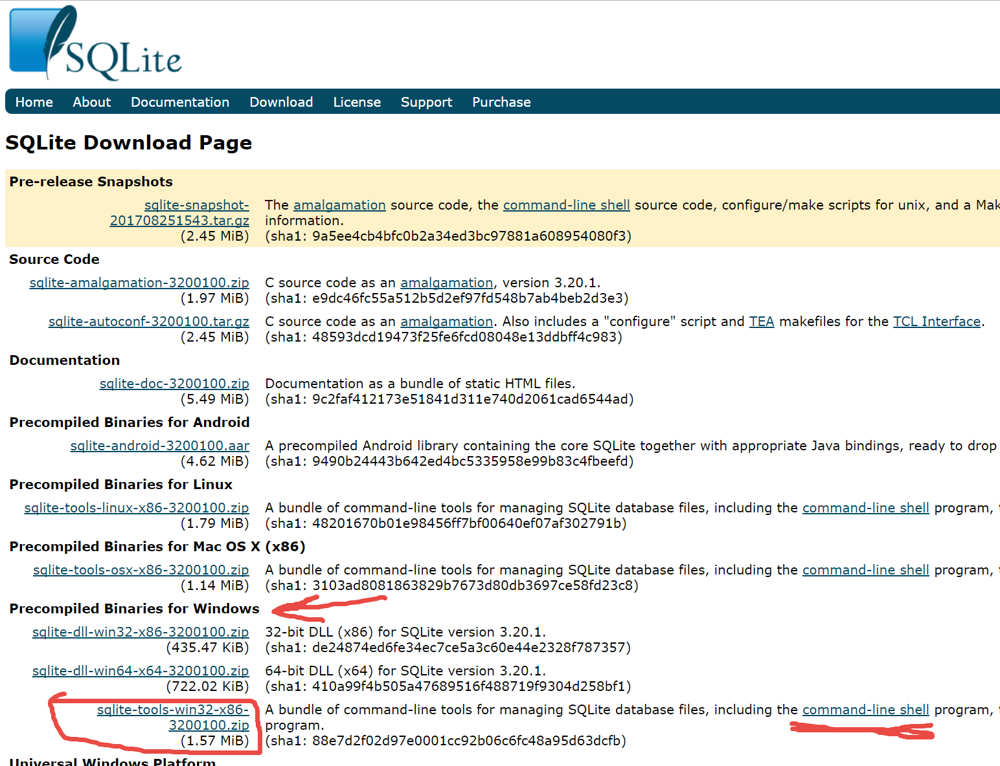
Unzip the downloaded file and obtain the sqlite3.exe file. Place it in the directory you want to work from with your database. In our case with the beatles.db sample database.
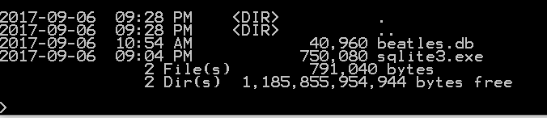
Execute sqlite3 beatles.db to open the sqlite3 command interpreter on the beatles.db database.
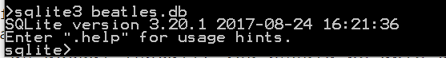
Now the database is open and you can operate on it with SQL command or use the dedicated shell "dot" commands. For example to see what tables the database consists of execute .tables
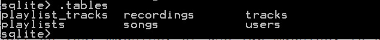
A "dot" command is specific to the sqlite3 shell program. To learn about all the possible "dot" command exectute .help
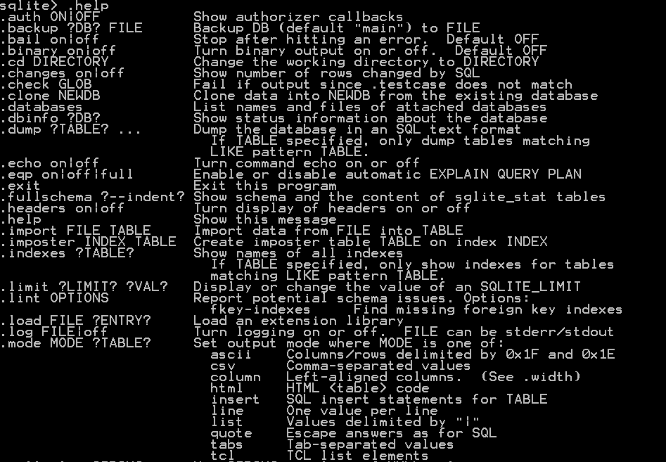
Here is some "getting started" tutorial information about running the shell from the sqlite.org site: http://www.sqlite.org/cli.html
To see the schema of table songs execute .schema songs
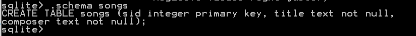
Using SQL Commands
The following images show the E-R model of the beatles.db database, a legend, and a diagram model of the database table schema. (These have nothing to do with objects in the object-oriented programming sense.)
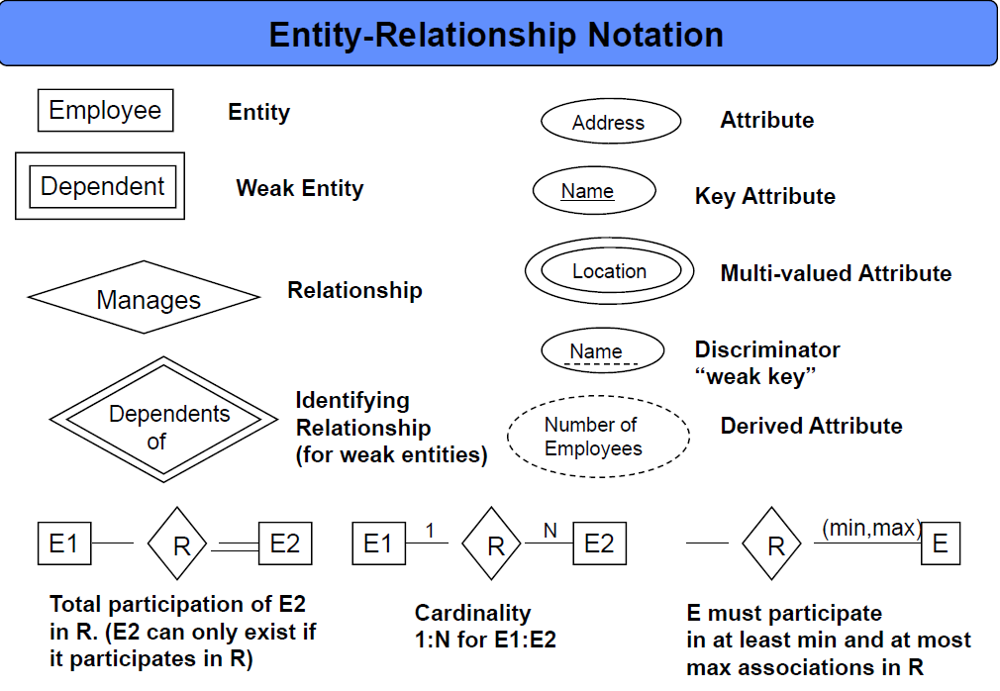
Table Schema of the beatles.db database
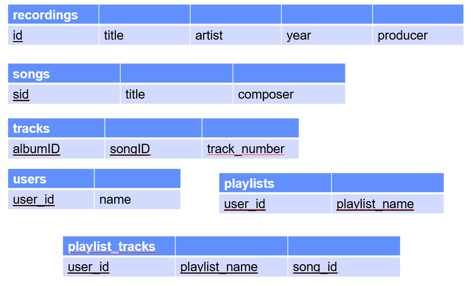
To select (and show) all the rows and columns of the recordings table execute:
select * from recordings;
Note sql commands don't start with a "dot" and always end in a semi-colon. (Because they end in semi-colon you can span them over multiple lines.) The following documentation on the sqlite.org site shows the SQL commands it supports and their syntax: http://www.sqlite.org/lang.html
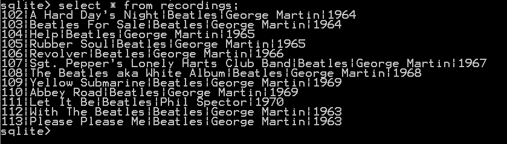
Notice the format is not very nice.
You can use the .mode column and .header on commands to put the output in column mode and show the column name header. Re-run the select command:
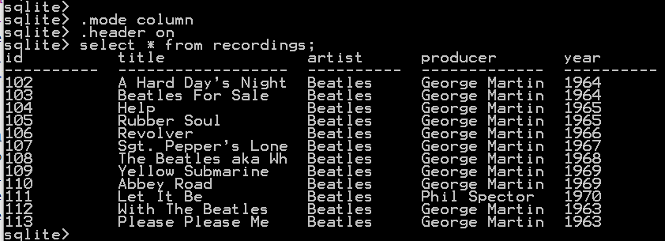
You will notice from time to time some data is cut-off because of the column width. You can use the .width command to set the width (in characters) of each column:
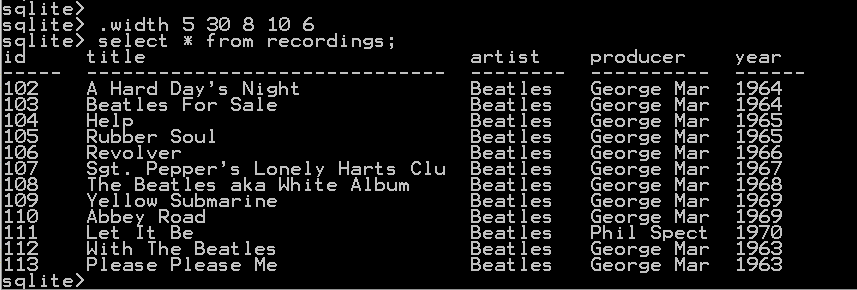
Problem 1)
Suppose you have invented a bash-style command for adding a song to an application:
add -s "The Girl From Ipanema"
Here add would be the command, perhaps -s designates song and "The Girl From Ipanema" the title of the song.
Suppose further you wanted a script with all such commands to populate your app with the Beatles songs contained in the beatles.db database. Here is a strategy you could follow:
1) Run an SQL query to find all the songs.
2) Format the query output to resemble your commad language.
3) Output the query result to a text file.
Lets do these steps:
Step 1) Execute the following query to list all the data in the songs table:
select * from songs;
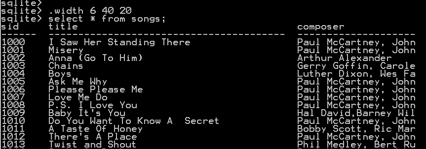
(Only a few entries of the result are shown)
Next lets be selective and only select the song id and titles.
select sid,title from songs;
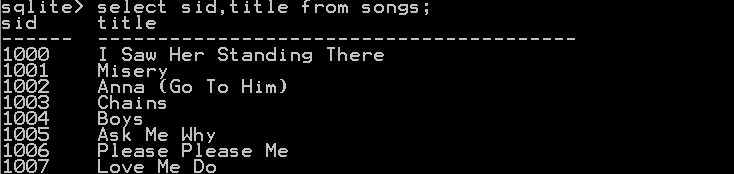
Step 2)
Next we can output additional information with the select. Here we will only select the title of the song but concatenate "add -s" in front of it using the SQL || concatenation operator (notice in SQL strings are delimited by single quotes).
select 'add -s ' || title from songs;
You may see something like the following because the mode is still column and the width is set too small:
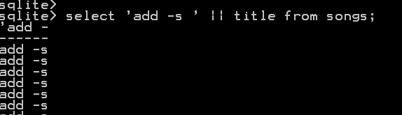
Switch to list mode by executing .mode list and then execute the SQL select * from songs;
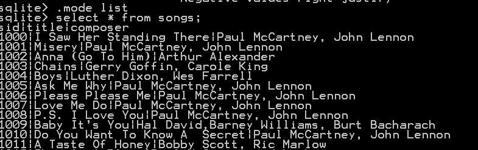
Notice this time the song table "columns" are simply separated by a "|".
Now use this mode to create your script commands:
select 'add -s ' || title from songs;
Remove the header column by executing .header off
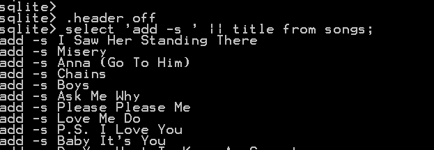
Finally there is a good chance your app might want the multi-word song title in double quotes.
select 'add -s "' || title || '"' from songs;
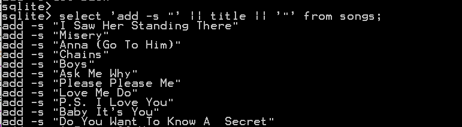
You have now output the data in the exact script form of your invented bash language script.
Step 3)
Finally lets write the script to a text file. Redirect the output to a text file by executing:
.output songScript.txt
re-execute the select query
select 'add -s "' || title || '"' from songs;
This time the output will not appear because a file songScript.txt will have been created and the output directed to it.
Finally redirect the output back to stdout:
.output stdout
Your directory will not contain your script file:
Which should look like this:
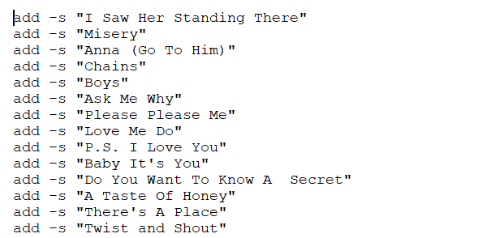
So you have just created a script in your new language which will populate your app with the same songs as the beatles.db database.
Problem exercise: repeat these steps for the command you have in mind for adding users to your app.
Problem 2)
An E-R model shows where data from different entities (tables) can be safely joined together. The relationships, indicated by the diamond shapes, allow the entities they connect to be joined together. Notice how recordings and songs have a relationship "tracks" connecting them:
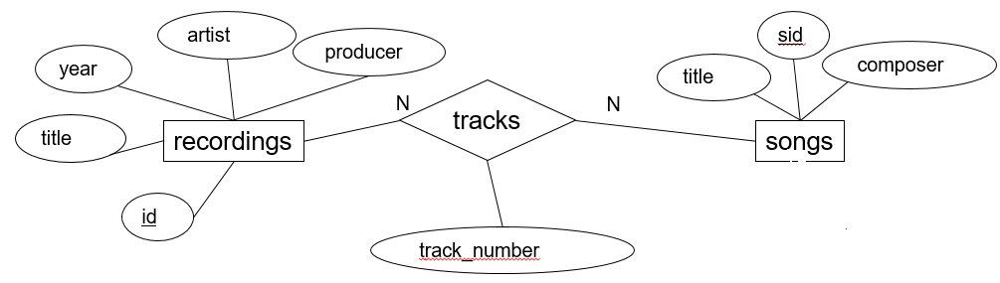
Suppose you wanted to show the name (title) of the album along with the title of the songs that appear on it. Notice the album title is part of the recordings entity and the song title is part of the songs entity. These would have to be joined along the tracks relationship.
Notice in the schema diagram at the top that the tracks relationship is implemented by adding a dedicated tracks entity (this is typical for N:N relationships).
Here is some data for the tracks entity:
select * from tracks;
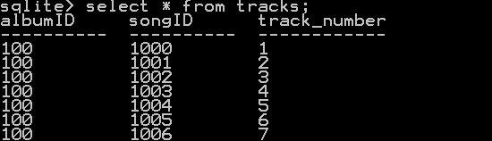
In order to also have the name of the song in the result we can run an SQL query that joins the tracks and songs entity along the attribute that froms the relationship.
select albumID, songID, track_number, songs.title from songs join tracks on songID=sid;
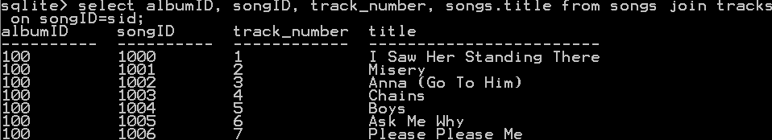
Finally to show the album title along with the song title and the track number where the song appears on the ablum you can join all three tables:
select recordings.title, track_number, songs.title from songs join tracks on songID=sid join recordings on albumID=id;
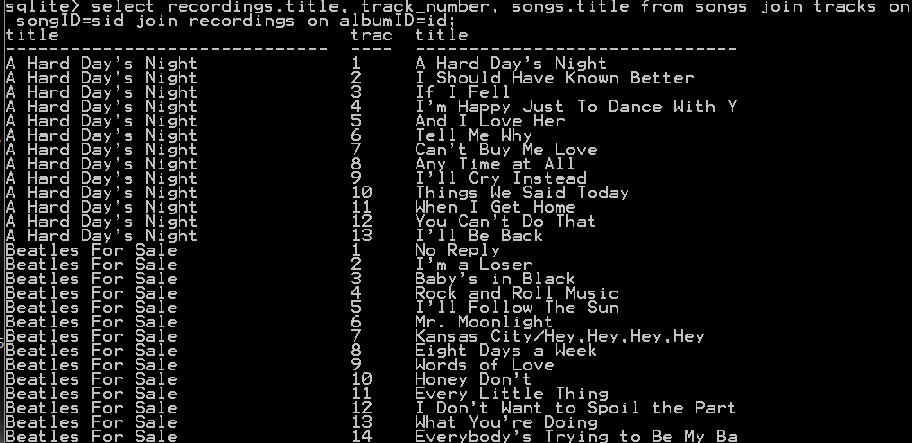
Problem Exercise:
Repeat this process to show for each user's name the playlists they own. Then show for each user's playlist the songs that are on that playlist.
Finally create a command script in your designed command language that creates the playlists for the users currently in the beatles database and also adds the songs to their playlists.
When you have completed these exercises show your work to the TA's to get credit for the tutorial.